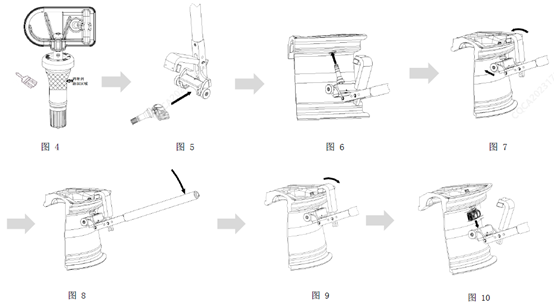

Шаг 1: Смазку можно нанести кистью на указанную зону (см. рис. 4); смазку с хорошей текучестью также можно наносить распылением на стержень вентиля или с помощью специальной оснастки выполнять серийное нанесение на стержень вентиля; конкретный инструмент и метод определяются условиями производственной линии. Обратите внимание: при нанесении смазочной пасты следует избегать попадания на вентиляционные отверстия электронного модуля, запрещается вдавливать пастообразную смазку в вентиляционные отверстия во избежание их засорения; категорически запрещается погружать датчик (электронный модуль) в смазку;
Шаг 2: Плавно установить электронный модуль датчика в предусмотренный паз корпуса специального инструмента, см. рис. 5;
Шаг 3: Вместе со специальным инструментом вставить вентиль датчика в отверстие обода колеса до соприкосновения резиновой конической поверхности стержня вентиля с внутренней стороной отверстия обода, см. рис. 6;
Шаг 4: Повернуть крюк специального инструмента и зацепить его за внешнюю закраину обода, затем прижать ролик специального инструмента к внутренней поверхности обода, см. рис. 7;
Шаг 5: Удерживая рукоятку специального инструмента, приложить вертикальное прижимное усилие вниз F ≈ 220 N, при этом защелкивающийся вентиль датчика под действием усилия запрессуется в отверстие обода колеса. В процессе нажатия прижимное усилие сначала постепенно увеличивается, а затем резко падает; падение усилия указывает на то, что маркировочное кольцо вентиля вышло наружу и вентиль установлен на место, см. рис. 8. При нажатии на рукоятку следить за соосностью вентиля и отверстия обода: при обнаружении заметного перекоса оснастка не соответствует ободу, требуется повторная калибровка оснастки;
Шаг 6: Снять крюк, см. рис. 9;
Шаг 7: Убрать специальный инструмент, установка завершена, см. рис. 10.
